20 candidates for Emmet's technique library (session 3D, H-26). Each was found in your instruction books and ranked by how widely official models in the LDraw OMR join its key parts (1315 sets mined). Each picture is a render of my sketch of it in Emmet's DSL, which validates with no findings; an accepted sketch becomes the technique, with its tests and render, and a rejected one is dropped. Nothing is taken from the models' files or the books' pages (D-48). Every candidate starts as Accept: switch the ones you don't want, add a note if it helps, then copy your answers and paste them to Claude.
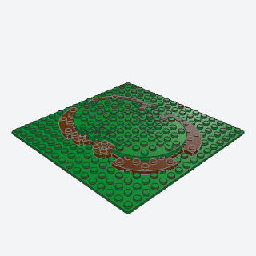
organic_ground_outlineA patch of raised lawn whose edge is a chain of rounded lobes, never a rectangle: a layer of soil plates with round corners and tongues, and a grass layer set in from it with its own, so a soil lip shows round the edge.
The edge of any raised lawn or ground patch on a baseplate (the cottage garden's lawn), so it reads as a vignette, not a rectangle.
Note: VARIANT of grass_edge, merging organic_lawn_lobes and ragged_edge_overlay: two layers whose outlines are round corners and random tongues, the grass set in a stud so a soil lip shows. Green on a green baseplate needs the soil color for contrast.
x, y, z, length, depth, seed, soil, grass, titlebatch-10/organic_ground_outline.py30565 + 30357 + 4032b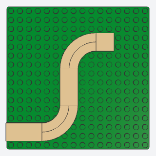
curved_garden_pathA smooth path two studs wide whose bends are true quarter circles of curved tiles, so it sweeps round a lawn's corner instead of turning in steps.
A garden path from the gate to the door that sweeps round a lawn's corner in a true curve, or an S between beds.
Note: VARIANT of dirt_path (which wanders in 2 x 2 steps with 1 x 1 corner tiles): each bend is two quarter-ring tiles, 79393 inside 3477. In this library 27925, 79393, 3477, and 27507 'Corner Round' tiles are all quarter rings; the books name 27925, so the larger rings are my pick. Path is always 2 studs wide.
x, y, z, legs, turns, color, titlebatch-10/curved_garden_path.py79393 + 3477 (some of its parts weren't confirmed from the book; I'd pin them when writing it)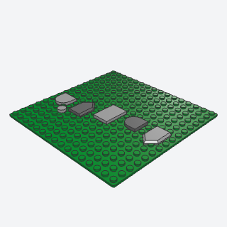
stepping_stonesA meandering trail of flat stones across a lawn, each a tile of a different outline, turned its own way, with grass between them.
A trail of stones across a lawn to a pond, a bench, or a back door.
Note: VARIANT of flagstone_paving: sparse, seeded, on grass. Left out the 2 x 2 triangular tile (35787): its body box puts its right angle off the grid at most turns.
x, y, z, length, wander, gap, seed, colors, titlebatch-10/stepping_stones.py14769 + 22385 + 5520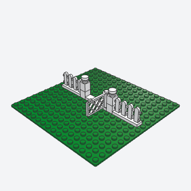
garden_gateA hinged gate between two capped posts, with picket fence running off either side, the way into a cottage garden.
The way into a fenced cottage garden: a gate between capped posts, with picket fence running off both sides.
Note: VARIANT of fence. The gate is the lattice Gate 1 x 4 x 2 on its hinge base (3186 on 3187): the library has no picket gate part. open=True swings it a quarter turn about its hinge; validated both along x and along y.
x, y, z, left, right, axis, open, color, titlebatch-10/garden_gate.py3186 + 3187 + 33303 (some of its parts weren't confirmed from the book; I'd pin them when writing it)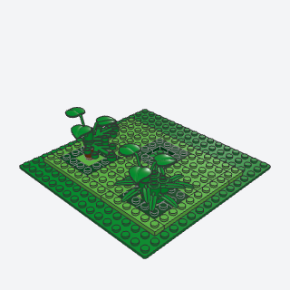
lawn_with_plant_socketsA raised lawn with square holes framed in corner plates, each taking a plant built apart on its own 2 x 2 plug, so trees and bushes can be built separately, moved, or left out.
A lawn whose trees and bushes are built apart and plug in, so plants can be moved, swapped, or left out.
Note: The plugs are submodels that call the library's bush and tree. Lawn defaults to Bright Green so it reads on a green baseplate.
x, y, z, length, depth, sockets, count, seed, plants, lawn, rim, titlebatch-10/lawn_with_plant_sockets.py2420 + 87580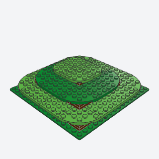
contour_terracesA low mound that rises in soft rings, each terrace a layer of earth under a grass top with round corners that overhangs it by a stud, every ring set back from the one below by a different amount on each side.
A low garden mound or a hill that rises in soft, rounded rings, behind a cottage or under a gazebo.
Note: VARIANT of hillside (which rises in straight terraces with cheese slopes): each ring is earth plates under a round-cornered grass layer that overhangs it a stud, set back 2 or 3 studs at random each side. The earth is solid plates, not the books' hollow ring frame.
x, y, z, length, depth, terraces, rise, seed, earth, grass, titlebatch-10/contour_terraces.py30565 + 30357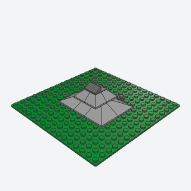
garden_boulderA smooth, faceted stone with a ridge along its back, from 33-degree slopes set in pairs that lean together, rounded at its ends by double-convex corners, under a smaller cap of 45-degree slopes crested with cheese slopes.
A smooth garden stone beside a pond or path, where a rough outcrop would look wrong.
Note: VARIANT of rock_outcrop: mirrored 33-degree slopes meeting in a ridge, a 45-degree cap, a cheese crest, mottled colors. At length 2 and up it reads a little like a hipped roof; length 1 reads best.
x, y, z, length, crest, seed, colors, pebbles, titlebatch-10/garden_boulder.py3298 + 3675 + 3045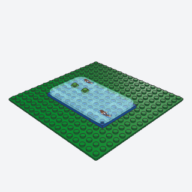
tiled_pond_waterStill water of long tiles laid in a running bond over a blue bed, so it shimmers in staggered rows, with koi among the tiles, lily pads on open studs, and its front and back rows drawn in so the pond reads round.
The water of a garden pond, with a shimmer of staggered tiles, koi, and open studs for lilies.
Note: VARIANT of pond (plain rows, a rim): running bond with no straight seams, koi, rounded front and back rows, returns the open studs for lily_and_reeds. Tile 1 x 3 was never made in Trans-Light Blue, so rows use 1 x 2 and 1 x 4, a 1 x 1 shifting a row when it must; the koi tiles exist only in Trans-Light Blue.
x, y, z, length, depth, seed, bed, water, fish, pads, titlebatch-10/tiled_pond_water.py3069bp0p + 3069bp0q + 2431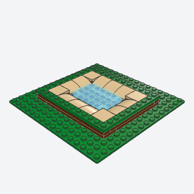
sunken_pond_bankA pond whose water lies below the grass, with a bank of curved slopes running down to it all round, so the lawn ends in a smooth curve at the waterline instead of a step.
A pond set below the lawn, the grass curving down to the water, instead of a pond sitting on top of the ground.
Note: VARIANT of pond and river: adds a bank course of curved slopes facing the water. The water is a plate below the grass. Curved slopes hold only by their lower studs in the connector data, so every bank slope sits wholly on the bed.
x, y, z, length, depth, bank, earth, grass, bed, water, titlebatch-10/sunken_pond_bank.py15068 + 11477 + 25269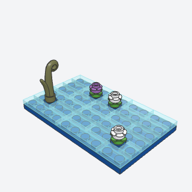
lily_and_reedsLife on a pond without covering it, lily pads with a flower and clumps of reeds, each on a single open stud among the water's tiles.
Life in a pond, on the open studs a tiled pond leaves: lily pads with flowers and clumps of reeds.
Note: Takes the studs (spots) rather than finding them. The pad is a round plate with tabs, not the books' 4727 leaves, to stay on one stud clear of the tiles.
spots, z, seed, reeds, pad, flowers, reed, titlebatch-10/lily_and_reeds.py33291 + 24866 + 15279 (some of its parts weren't confirmed from the book; I'd pin them when writing it)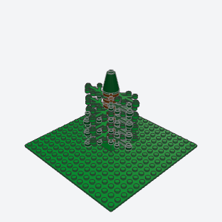
layered_coniferA tall, narrow evergreen of soft tiers, each a pinwheel of leaf plates on a round trunk plate, every tier turning the other way from the one below so its leaves fill the gaps; built apart and placed as a submodel.
A tall, narrow evergreen for a garden border or a forest edge, softer than the slope-built pine_tree.
Note: VARIANT of pine_tree (slopes): leaf plates in tiers. The books thread leaves on a bar; here each tier is four leaves in a pinwheel on a round 2 x 2 plate, held by the leaves' own studs, and the top two tiers have two. It reads columnar, not tapered.
x, y, z, tiers, colors, trunk, base, titlebatch-10/layered_conifer.py2423 + 4032b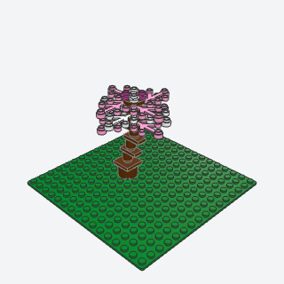
blossom_treeA small flowering tree whose trunk leans as it rises, on jumper plates that step it half a stud at a time, under a fluffy crown of pink and white leaves in pinwheels, dotted with petal plates; built apart and placed.
A flowering cherry or apple tree in a cottage or eastern garden, a splash of pink.
Note: VARIANT of tree. The books' crown is the six-stem flower stem (19119) with petals on its angled arms, which the grid can't place; this crown is pinwheels of pink and white Plant Leaves 4 x 3 with petal plates on top. The trunk leans on jumper plates, half a stud a course, as the grid's stand-in for the curved trunk.
x, y, z, lean, layers, blossom, flowers, trunk, titlebatch-10/blossom_tree.py2423 + 24866 + 3794b (some of its parts weren't confirmed from the book; I'd pin them when writing it)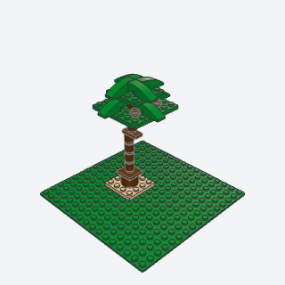
palm_treeA tall trunk of round bricks that leans as it rises, on jumper plates, under a head of drooping fronds of curved slopes in two pinwheels, with coconuts; built apart and placed as a submodel.
A palm for a beach, a tropical garden, or a pirate island.
Note: From the curved-slope palm (31109), not the clipped trunk segments and sword leaves (43268), which need angles. The connector data gives 50950 no anti-stud under its high end, so each frond's high end and middle sit on the head plate and only the low end hangs out.
x, y, z, height, lean, fronds, trunk, coconuts, titlebatch-10/palm_tree.py50950 + 3958 + 3794b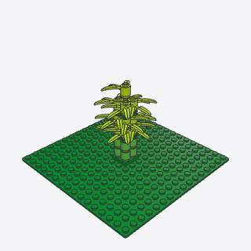
bamboo_groveA clump of tall, segmented canes of round bricks with darker rings at the joints and sprays of narrow leaves, four canes of different heights on one 2 x 2 base, the tallest at the back.
A clump of bamboo in an eastern garden, a jungle, or beside a pond.
x, y, z, height, seed, cane, joint, leaves, base, titlebatch-10/bamboo_grove.py30176 + 3062b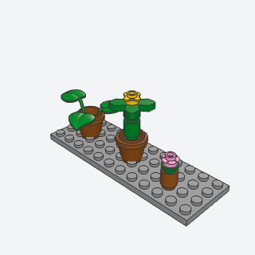
potted_plantA pot with a plant in it, for a doorstep, a path's edge, or a windowsill: a real flower pot with a leafy plant or a flower on a stem, or a tiny pot of a round 1 x 1 brick with one bloom.
A pot of flowers or a fern by the door, on the step, or on a windowsill.
Note: The flower stems with bar (99249c01 and the like) read as floating in the pot (an assembly with no connector data), so the flower is a stem of round bricks with 4727 leaves and a bloom. The flower pot was made only in Black, Dark Orange, and one other color.
x, y, z, kind, pot, leaves, bloom, titlebatch-10/potted_plant.py7077 + 6255 + 4727 (some of its parts weren't confirmed from the book; I'd pin them when writing it)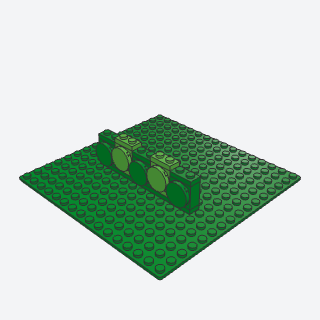
clipped_hedgeA low hedge along a wall or path that reads as a row of rounded, clipped bushes: round 2 x 2 tiles standing on the side studs of bricks, every other bush a plate higher.
A low clipped hedge along a cottage front, a path, or a diner's windows.
Note: One stud deep, rounded on its face side only.
x, y, z, length, facing, colors, titlebatch-10/clipped_hedge.py22885 + 14769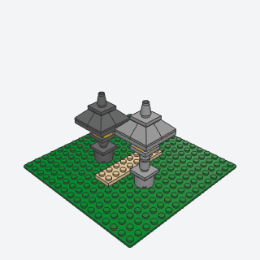
stone_lanternA garden lantern of stacked stone, a round plinth, a slim pillar, a glowing light chamber, and a pyramid roof with a finial, built apart and placed beside a path.
A stone lantern beside a garden path or a pond, in an eastern or fantasy garden.
Note: One roof tier; the books' three-tier stacked tower isn't built.
x, y, z, pillar, color, light, titlebatch-10/stone_lantern.py3045 + 3941 + 87580 + 4589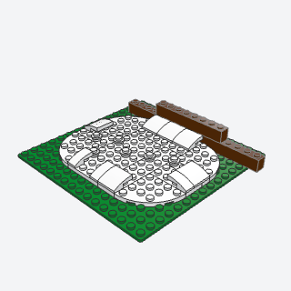
snow_drift_edgeA snowy patch whose edges are soft drifts, not a plate's edge: round corners, curved slopes laid along the rim with their low side out, a deeper drift piled against a wall, and loose snow on top.
Snow over a garden in a winter scene, drifting at the edges and banked against the house.
Note: VARIANT of snow_cap and grass_edge. Uses 4 x 4 corner-round plates where the book also used long wedge plates.
x, y, z, length, depth, wall, seed, color, titlebatch-10/snow_drift_edge.py15068 + 11477 + 30565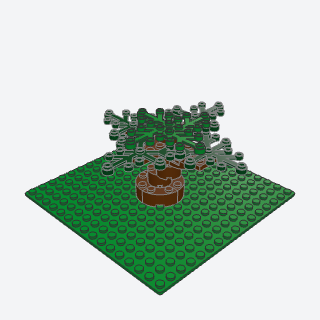
gnarled_treeAn old, twisted tree on a flared root base, its trunk of round bricks stepping a stud aside at each course, and two crossed limbs spreading low, curving down underneath where they leave the trunk, with leaves at their ends; built apart and placed as a submodel.
An old, twisted tree for a fantasy village or the corner of an overgrown garden.
Note: VARIANT of tree, a grid stand-in: the book's horn-shaped branches on clips need angles. The trunk twists by offsetting round bricks a stud, the limbs are crossed 2 x 8 plates with inverted curved slopes under them. It reads as a spreading old tree more than a gnarled one.
x, y, z, height, seed, bark, leaves, titlebatch-10/gnarled_tree.py3063b + 24201 + 2417 (some of its parts weren't confirmed from the book; I'd pin them when writing it)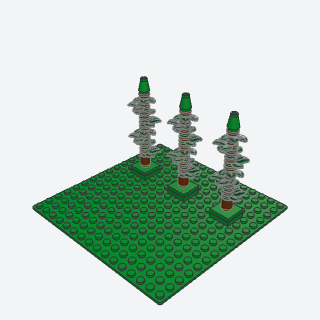
cypressA slim, upright tree, a dark green flame, of small leaf plates stacked on a single stud, each turned a quarter from the one below, on a short trunk; built apart and placed as a submodel, so a row of them along a border is one sub-assembly built "x n".
Slim upright trees in a row along a garden border or a Mediterranean villa.
Note: The books use one tall tapered leaf element or small cones on a bar; this stacks Plates 1 x 1 Round with 3 Leaves on a single stud. 6141 and 4589 were never made in Dark Green, so the stem and tip take the trunk and base colors.
x, y, z, layers, color, trunk, base, titlebatch-10/cypress.py32607 + 87580 (some of its parts weren't confirmed from the book; I'd pin them when writing it)